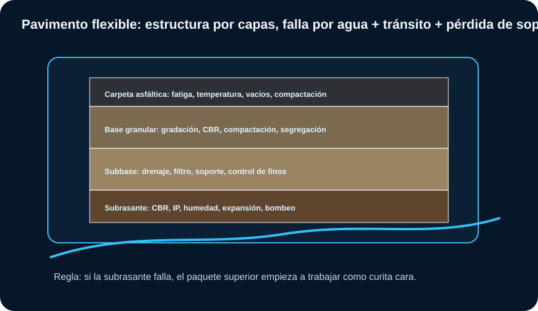
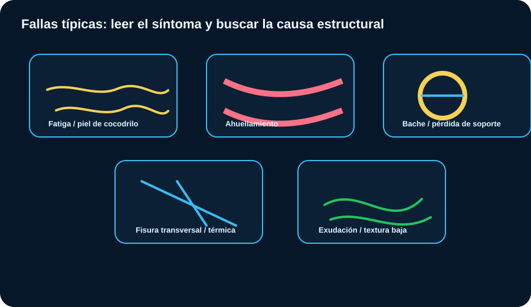

Pavimentos
El pavimento no falla sólo por “asfalto malo”. Muchas fallas nacen en subrasante, drenaje, compactación, gradación y control térmico. Este módulo cruza ensayos con decisiones de campo.
Estructura de pavimento flexible
La lectura correcta empieza por saber qué función cumple cada capa.

Cómo leer: la carpeta distribuye cargas y brinda servicio; base/subbase reparten y drenan; subrasante define el soporte real.
Capas y controles
| Capa | Qué controla | Ensayos clave |
|---|---|---|
| Subrasante | Soporte, humedad, plasticidad, expansión. | CBR, Proctor, densidad, Atterberg, DCP. |
| Subbase | Drenaje, transición, soporte adicional. | Granulometría, IP, CBR, densidad, equivalente de arena. |
| Base granular | Capacidad estructural, trabazón, durabilidad. | Granulometría, desgaste, CBR, compactación, sanidad. |
| Mezcla asfáltica | Impermeabilidad parcial, fricción, fatiga, ahuellamiento. | Marshall/Rice, contenido de asfalto, vacíos, temperatura, densidad. |
| Drenaje | Vida útil de todo el paquete. | Pendientes, cunetas, filtros, permeabilidad, bombeo. |
Ensayos principales
Cada ensayo debe cerrar una decisión: aceptar, corregir, reemplazar o rediseñar.

Cómo leer: no se interpreta CBR sin humedad, ni compactación sin Proctor, ni base granular sin granulometría y plasticidad.
Lectura por ensayo
| Ensayo | Resultado | Decisión de obra |
|---|---|---|
| CBR | Soporte relativo. | Define mejoramiento, espesor o rechazo de subrasante/material. |
| Proctor | wopt y γd máx. | Define humedad de compactación y referencia de aceptación. |
| Densidad campo | GC logrado. | Aceptar, recompactar, ajustar humedad o retirar material. |
| Granulometría | Distribución y finos. | Evitar segregación, bloqueo de drenaje o baja trabazón. |
| Atterberg | LL, LP, IP. | Detectar sensibilidad al agua, bombeo y expansión. |
| DCP | Penetración por golpe. | Control rápido de uniformidad y soporte in situ. |
| Marshall/Rice | Estabilidad, flujo, vacíos, Gmm. | Control de mezcla asfáltica, densidad y riesgo de deformación. |
| FWD/IRI | Deflexión y regularidad. | Evaluar estructura existente y calidad funcional. |
CBR, DCP y subrasante
El soporte no depende sólo del suelo; depende de su estado de humedad y compactación.
CBR orientativo de subrasante
| CBR | Lectura | Criterio práctico |
|---|---|---|
| < 3% | Muy pobre. | Riesgo alto: mejorar, estabilizar, reemplazar o rediseñar paquete. |
| 3–5% | Pobre. | Revisar drenaje, plasticidad y espesor; no confiar sin mejora. |
| 5–10% | Regular. | Puede funcionar en tránsito bajo/medio con buen drenaje y compactación. |
| 10–20% | Bueno. | Subrasante favorable, verificar uniformidad. |
| > 20% | Muy bueno. | Buen soporte preliminar; igual controlar agua y variabilidad. |
Semáforo CBR + IP + compactación
Estimación rápida DCP → CBR
Correlación orientativa genérica. Para diseño, calibrar con material local y normativa del proyecto.
Material granular para base y subbase
Una base granular no se aprueba por “verse buena”: se aprueba por gradación, plasticidad, durabilidad, soporte y compactación.
| Parámetro | Resultado problemático | Efecto probable | Acción |
|---|---|---|---|
| Finos altos | Pasa #200 elevado. | Bloqueo de drenaje, bombeo, sensibilidad al agua. | Rechazar, lavar, mezclar o cambiar fuente. |
| IP alto | Finos plásticos. | Deformación con humedad, pérdida de soporte. | No usar en base sin estabilización o autorización técnica. |
| Gradación discontinua | Saltos en curva. | Segregación y compactación no uniforme. | Control de acopio, mezcla y extendido. |
| Los Ángeles alto | Agregado débil. | Generación de finos y pérdida de estructura. | Revisar especificación; cambiar fuente si excede. |
| GC bajo | Densidad insuficiente. | Asentamiento, deformación, ahuellamiento. | Recompactar con humedad y equipo adecuado. |
Los límites exactos dependen del pliego. En pavimentos, “casi cumple” en la base puede convertirse en falla repetitiva bajo tránsito.
Mezclas asfálticas
La mezcla debe cumplir diseño, producción, transporte, temperatura, compactación y densidad.
| Resultado | Lectura técnica | Riesgo | Acción |
|---|---|---|---|
| Vacíos bajos | Mezcla cerrada o exceso de asfalto. | Exudación y ahuellamiento. | Revisar dosificación y compactación. |
| Vacíos altos | Falta densidad o asfalto insuficiente. | Oxidación, agua, desprendimiento. | Controlar temperatura, rodillado y contenido de ligante. |
| Flujo alto | Mezcla deformable. | Ahuellamiento en clima/tránsito exigente. | Ajustar granulometría, ligante o vacíos. |
| Estabilidad baja | Baja resistencia a carga. | Deformación, fisuración temprana. | Revisar agregados, ligante y diseño Marshall/Superpave. |
| Llega fría | Ventana de compactación perdida. | Baja densidad y vida útil corta. | Rechazar o limitar colocación según especificación. |
Fallas típicas y diagnóstico
El síntoma visible rara vez es la causa única.

Cómo leer: piel de cocodrilo sugiere fatiga estructural; ahuellamiento sugiere deformación de mezcla/capa/subrasante; baches suelen combinar agua, fisuras y pérdida de soporte.
Matriz de diagnóstico
| Falla | Causas probables | Ensayos/controles |
|---|---|---|
| Piel de cocodrilo | Fatiga, espesor insuficiente, base/subrasante débil. | Deflectometría, calicatas, CBR/DCP, espesores. |
| Ahuellamiento | Mezcla inestable, baja densidad, base deformable. | Densidad, Marshall, temperatura, granulometría, DCP. |
| Bombeo | Agua + finos + carga repetida. | Drenaje, finos, IP, juntas/fisuras, NF. |
| Baches | Entrada de agua, pérdida de soporte, mala reparación. | Inspección, drenaje, testigos, densidad, adherencia. |
| Fisura térmica | Contracción, ligante, clima. | Tipo de ligante, edad, temperatura, espaciamiento. |